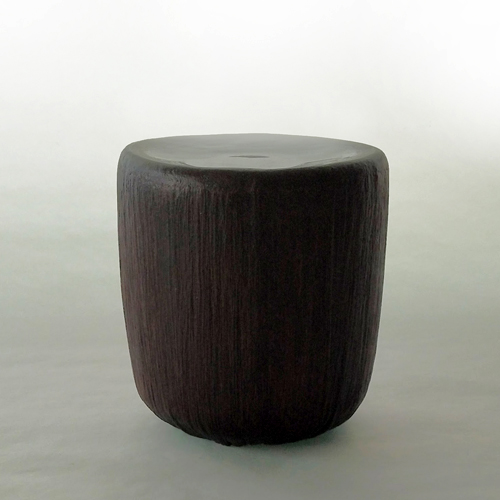

執念の「合口」— 挫折から生まれた乾漆技法
2026-04-02T14:30

乾漆の「筒椀」です。
この作品には、私の作家人生において忘れられない、ある「悔しさ」が刻まれています。
転換点となった、あるキャンセル
この筒椀はもともと、「蓋をつけてくれたら購入したい」というお話をいただいたことがきっかけでした。私の筒椀と同じ技法を用いる場合、本来1年という製作期間は決して長くはありません。むしろ短い部類に入りますが、ご要望に応えるべく他の作業よりも優先して急ぎ制作を進めました。
しかし、ようやく完成してお見せしたところ、結果はキャンセル。その時の悔しさは言葉にできるものではありませんでした。
しかし、その経験が私の火をつけました。「誰かのための蓋」ではなく、「自分が心底納得できる、究極の蓋」を作り直そうと決意したのです。そこからさらに数年の歳月を費やし、試行錯誤を繰り返しました。
「人間国宝の方々を上回る精度を実現したい」。 その厚かましいモチベーションの源泉は、あの日味わった挫折にあります。
9000年の歴史と、現代の意地
この作品に使用している漆には、特別な背景があります。
映画「もののけ姫」の時代設定の頃から、エミシの村の地に息づく昔ながらのウルシ樹から採取された貴重な樹液を使用しています。
古来より続く森の生命力を宿したその漆は、塗り重ねるごとに深く、澄んだ表情を見せてくれます。素材そのものが持つ力に導かれるように、丁寧に作業を重ねていきました。
漆という素材が人によって使われ始めてから、およそ9000年。その古から続く素材と技法を用い、数年かけてようやく到達したのが、この「目視でも境目が判別できない合口（あいくち）」です。 会場で「どこが合口かわからない」という声をいただいた時、あの時の悔しさが、ようやく作家としての確かな自負へと変わりました。
語らないという矜持
私はもともと、漆とは無縁の経歴からこの世界に入りました。東京藝術大学を卒業し、漆芸家として歩んできましたが、制作の具体的な工程についてはあえて私から語るつもりはありません。
挑戦したいと思う作家がいるのなら、自ら考え、挑めばいいことだと考えているからです。ドジャースの大谷翔平選手も、同期の日本選手に手の内をあまり教えなかったというテレビの放映を見ましたが、その姿勢には非常に共感し、心強く感じています。
過程を説明するのではなく、どれほどの苦悩があろうとも、仕上がった作品はただ静かに、美しくそこにある。それが漆芸家としての私の矜持です。完成された「作品」そのものがすべてを語る。9000年の伝統と現代の作家の意地が重なる一点を、ぜひ感じていただければ幸いです。